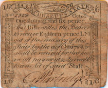
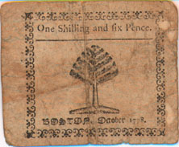
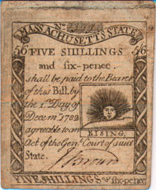
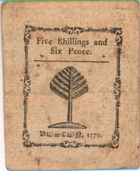
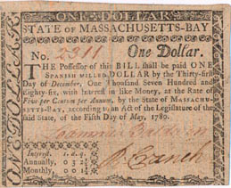
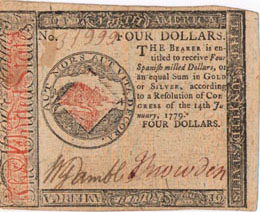
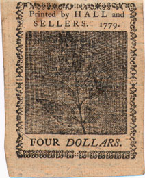
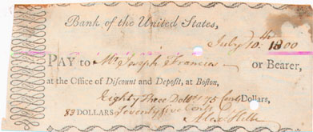

(answer) (answer)
What date was this money issued?
By whom was this money issued?
How much was this money worth?
What did 1/6 mean?
How many pence equaled one shilling?
If 1/6 meant one shilling six pence, what did 12/ mean?
|

[front]
1/6 Massachusetts State 1/6
No. 2323 Octor 16
One shilling and six pence
This bill entitles the Bearer
to receive Eighteen pence LM
out of the treasury of this
state by the 18 of Octo"1784 [ ]
shall be recieved for that sum
in all payments agreable
to an Act of said State.
1/6 G. Partridge } Comitee 1/6
|

[back]
One Shilling and Six Pence
Boston October 1778
|
|
States issued bills of credit that were used as money. (keep this one?)
During the American Revolution, coins were scarce, so paper bills were issued in small and large denominations.
|
What kind of money did Martha Ballard use?
|

[front]
No. xxxxx
5/6 FIVE SHILLINGS 5/6
and six-pence.
shall be paid to the Bearer
of this Bill by
the [ ] Day of
Decem"1782
agreeable to an
Act of the Gen[.] Court of said
State.
J. Brown
FIVE SHILLINGS [&] six-pence
1/6 G. Partridge } Comitee 1/6
|

[back]
Five Shillings and Six Pence
Boston October 1779
|
|
|
How did American dollars, issued by the Continental Congress and some of the colonies, come to share the name dollar with the Spanish dollar?
|

[back]
ONE DOLLAR
No. 2311 One Dollar.
The Possessor of this Bill shall be paid ONE
SPANISH MILLED DOLLAR by the Thirty-first
Day of December, One Thousand Seven Hundred and
eighty-six, with interest in like money, at the Rate of Five per Centum per annum, by the State of Massachu-
setts-Bay, according to an act of the Legislature of the
said State, of the Fifth Day of May, 1780.
|
|
|
Spanish pieces of eight, made of silver, were called dollars and were widely used in the American colonies. During the Revolution, the continental Congress and some of the colonies based the value of their dollars on the value of one piece of eight, or Spanish dollar.
|
|

[front]
ONE DOLLAR
No. 31999 Four Dollars.
The Bearer is en-
titled to receive Four
Spanish milled Dollars, or
an equal Sum in Gold
or SILVER, according
to a Resolution of CON-
GRESS of the 14th Ja
nuary, 1779.
FOUR DOLLARS
|

[back]
|
|
Continental Dollars were supposed to be redeemable in gold and silver. This proved to be impossible, so inflation eventually made "Continentals" nearly worthless. |
Could Martha have used this as money?
|

[front]
Bank of the United States,
July 10.th 1800
PAY to Mr. Joseph Francis-- or Bearer,
at the Office of Discount and Deposit, at Boston,
Eighty three Doll[ ] 75 Cents Dollars,
83 Dollars Seventy five Cents
|
|
|
After the Revolution, the states and the federal government chartered banks to issue bills of credit that were used as paper money; cash was still scarce. |